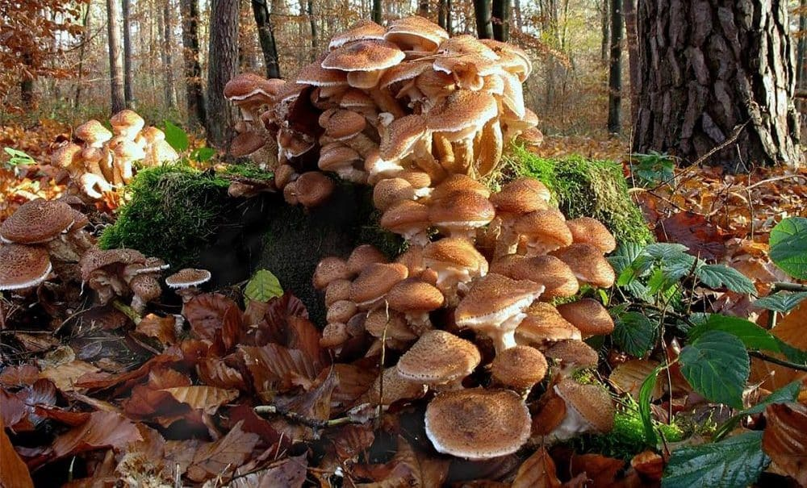

Cogumelos são pertencentes do Reino Fungi
Porque os cogumelos são tão interessantes?
Além de serem importatnes para o ecossistema, como agentes decompositores, são usados para medicina, culinária e uso recreativo. A grande produção e variedade de substâncias permitem que os cogumelos se desenvolvam em ambientes onde a degradação é complexa, como tronco de árvores e até mesmo solos contaminados, mas preferem lugares úmidos e com sombras.
Inclusive, o maior ser vivo da terra é um cogumelo ou fungo chamado Fungo Humongous, e mede cerca de 3,8km
Confira abaixo receitas culinárias com cada cogumelo a seguir:
champgnon